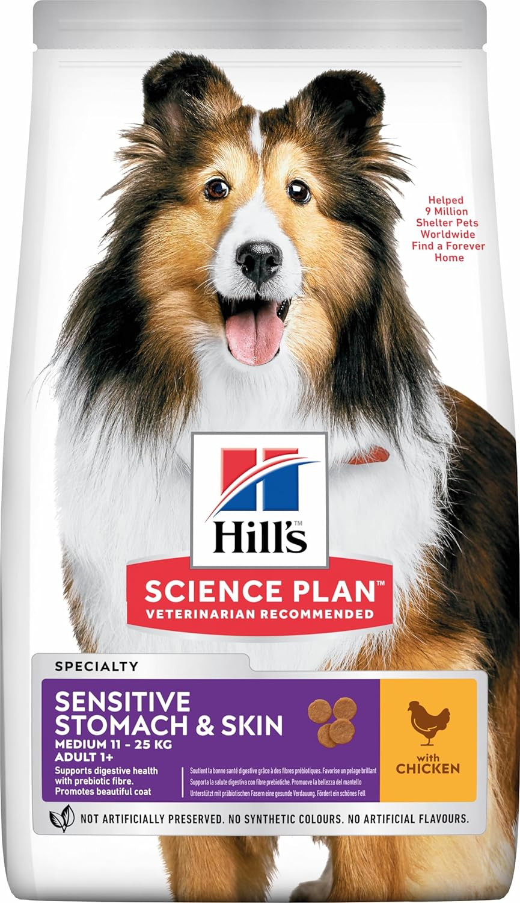
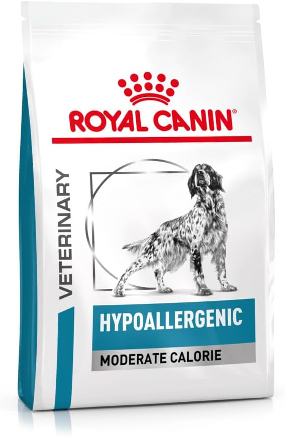
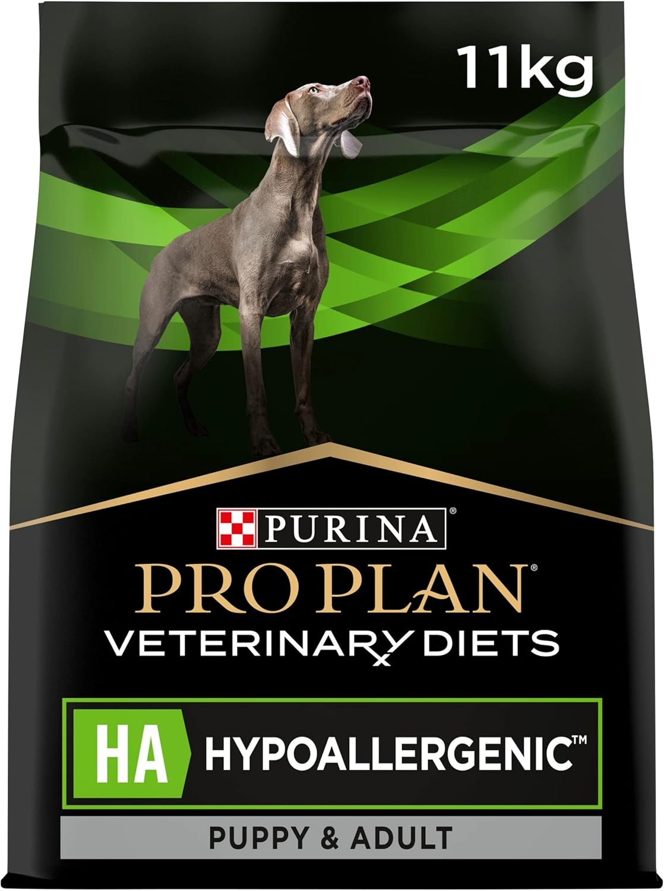
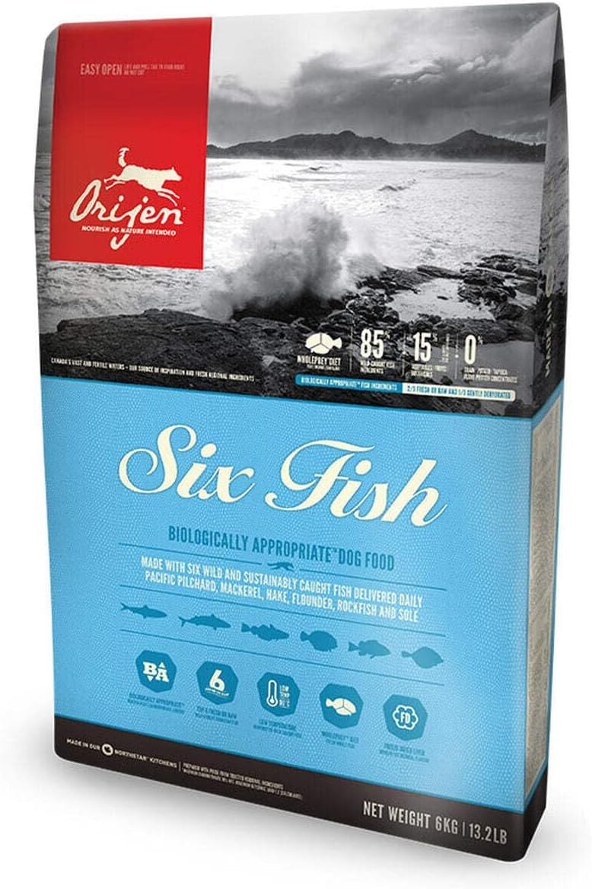
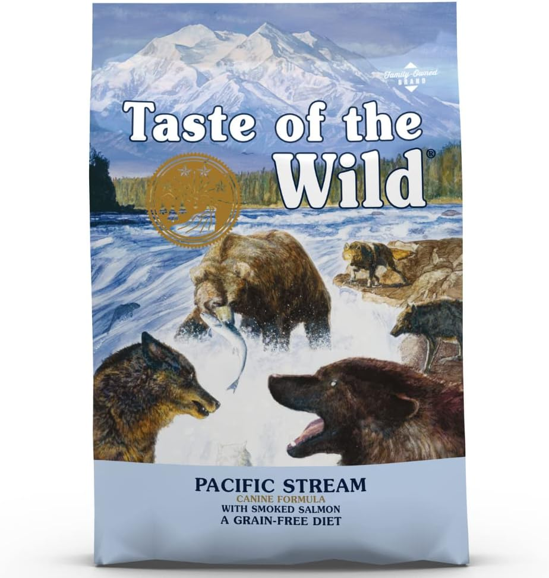

Los 5 mejores piensos para perros con alergia 2026
Tu perro se rasca sin parar, tiene la piel irritada o digestiones irregulares. Puede ser una alergia alimentaria — y el pienso correcto puede cambiarlo todo. Analizamos los 5 mejores piensos hipoalergénicos con precios reales en Amazon.
Actualizado: abril 2026·10 min de lectura·5 piensos analizadosCon tabla comparativa
Transparencia: algunos enlaces son de afiliado (Amazon Associates, tag: primepick03f9-21). Sin coste adicional para ti. Nuestras recomendaciones son independientes.
Las alergias alimentarias afectan aproximadamente a 1 de cada 7 perros. Los síntomas más frecuentes — picor crónico, piel irritada, digestiones irregulares — pueden mejorar drásticamente con un cambio de pienso. El problema es que el mercado está lleno de productos que se etiquetan como "hipoalergénicos" sin serlo realmente.
En esta guía analizamos los 5 piensos que realmente funcionan, diferenciando entre los de gama veterinaria (los más efectivos para alergias graves) y los piensos premium sin cereales (ideales para sensibilidades leves o prevención).
¿Cómo saber si tu perro tiene alergia alimentaria?
🐾
Rascado crónico
Se rasca repetidamente las patas, orejas, axilas o zona anal. Sin pulgas visibles ni causa ambiental aparente.
🔴
Piel irritada o rojiza
Zonas enrojecidas, especialmente entre los dedos, en el vientre o alrededor del hocico. A veces con pérdida de pelo localizada.
🤢
Problemas digestivos
Diarreas frecuentes, deposiciones blandas, vómitos ocasionales o gases excesivos sin otra causa médica.
👂
Otitis recurrente
Infecciones de oído que vuelven una y otra vez. Las alergias alimentarias son una causa subyacente muy frecuente y a menudo ignorada.
⚠️
Importante: antes de cambiar el pienso, consulta con tu veterinario. Los síntomas de alergia alimentaria pueden confundirse con alergias ambientales, dermatitis atópica o problemas de parásitos. Un diagnóstico correcto evita cambios de dieta innecesarios y acelera la mejora.
Nuestro ganador: el mejor pienso para perros con alergia

🏆 Ganador · Mejor relación eficacia/precio
Hill's Science Plan Sensitive Skin & Stomach
Proteína única de salmón, sin colorantes ni conservantes artificiales, con omega-3 y omega-6 para la piel. Respaldado por décadas de investigación veterinaria. La mayoría de perros con sensibilidad leve o moderada mejoran visiblemente en 6-8 semanas.
Los 5 mejores piensos hipoalergénicos — ranking completo
01
GanadorSensibilidad leve-moderada
Hill's Science Plan Sensitive Skin & Stomach
Fórmula con salmón como única fuente proteica animal, sin subproductos, sin colorantes ni conservantes artificiales. Rica en ácidos grasos omega-3 y omega-6 que mejoran la barrera cutánea. Disponible en tallas XS a XL y en versión cachorro.
✓ Por qué lo recomendamos: excelente aceptación palatabilidad, ampliamente respaldado por veterinarios españoles, mejora visible en piel y digestión en 4-8 semanas.
✓ Proteína única · Sin cereales problemáticos · Omega 3 y 6 · Todas las tallas ✗ No apto para alergias graves que requieren proteína hidrolizada

02
VeterinarioAlergia grave
Royal Canin Hypoallergenic
Pienso de gama veterinaria con proteína animal hidrolizada — las proteínas se fragmentan en trozos tan pequeños que el sistema inmune no las reconoce como alérgenos. Es el estándar de referencia para diagnóstico de alergias alimentarias graves. Requiere prescripción veterinaria en algunos casos.
✓ Por qué lo recomendamos: el más efectivo para alergias alimentarias confirmadas. Si el veterinario sospecha alergia severa, este es el primer pienso a probar en la dieta de eliminación.
✓ Proteína hidrolizada · Diagnóstico y tratamiento · Alta efectividad ✗ Precio elevado · Palatabilidad variable · Necesita prescripción

03
VeterinarioTodas las edades
Purina Pro Plan Veterinary Diets HA Hypoallergenic
Proteína de soja hidrolizada con almidón de maíz como fuente de carbohidrato. Formulado para perros de cualquier edad y raza con alergias o intolerancias confirmadas. Alternativa al Royal Canin Hypo con una palatabilidad generalmente mejor y precio ligeramente inferior.
✓ Por qué lo recomendamos: muy buena opción cuando el Royal Canin no es aceptado por el perro. Mismo nivel de efectividad clínica con mejor aceptación en muchos casos.
✓ Soja hidrolizada · Mejor palatabilidad que RC Hypo · Todas las edades ✗ No apto para perros con alergia a la soja

04
Sin cerealesProteína novedosa
Orijen Six Fish
85% de pescado fresco o congelado de seis especies distintas (arenque, caballa, lucio, lenguado, atún, bacalao). Sin cereales, sin patata, sin legumbres problemáticas. Ideal para perros con alergia al pollo, ternera o cerdo — proteínas que el sistema inmune raramente ha visto antes y tolera mejor.
✓ Por qué lo recomendamos: la mejor opción premium sin cereales para perros alérgicos al pollo o la ternera. Alta densidad nutricional y palatabilidad excelente.
✓ 85% proteína animal · Sin cereales · Proteína novedosa de pescado ✗ Precio muy elevado · No apto para alergia al pescado

05
Mejor precioSin cereales
Taste of the Wild Sierra Mountain — cordero
Cordero asado como proteína única principal, sin cereales, sin colorantes artificiales. Fórmula con probióticos específicos para mejorar la flora intestinal. La opción más asequible de la lista que sigue ofreciendo ingredientes de calidad. Muy popular en España con excelentes valoraciones.
✓ Por qué lo recomendamos: la mejor relación calidad-precio para perros con sensibilidad leve. Cordero como proteína novedosa para perros que suelen comer pollo.
✓ Precio muy competitivo · Cordero como proteína única · Probióticos ✗ No apto para alergias graves confirmadas
Tabla comparativa rápida
Pienso
Tipo proteína
Sin cereales
Para alergias
Precio/kg
Hill's Sensitive
Salmón (entera)
✅
Leve-moderada
~2,3€
Royal Canin Hypo
Hidrolizada
❌
Grave (veterinario)
~7,9€
Purina HA
Soja hidrolizada
❌
Grave (veterinario)
~4,4€
Orijen Six Fish
6 pescados (entera)
✅
Leve-moderada
~9,7€
Taste of the Wild
Cordero (entera)
✅
Leve
~3,0€
Cómo elegir el pienso correcto según el tipo de alergia
No todos los piensos hipoalergénicos funcionan igual para todos los perros. La clave está en entender qué tipo de alergia tiene tu perro:
Alergia alimentaria confirmada por veterinario: empieza con Royal Canin Hypo o Purina HA — son los únicos con proteína verdaderamente hidrolizada que garantiza no activar el sistema inmune.
Sensibilidad leve o digestión irregular: Hill's Sensitive o Taste of the Wild son suficientes y mucho más económicos.
Alergia al pollo o la ternera (los más comunes): Orijen Six Fish o Taste of the Wild Sierra Mountain (cordero) — proteínas que el sistema inmune raramente ha procesado antes.
Presupuesto ajustado: Taste of the Wild a ~3€/kg ofrece la mejor calidad dentro de un precio accesible.
💡
El truco de la dieta de eliminación: para identificar el alérgeno exacto, el veterinario puede prescribir una dieta de eliminación de 8-12 semanas con un único pienso hipoalergénico estricto, sin nada más — ni premios, ni restos de comida humana. Es la única forma de saber con certeza a qué es alérgico tu perro.
Entre 6 y 12 semanas para ver mejoría significativa en la piel. Los síntomas digestivos suelen mejorar antes, en 2-4 semanas. Durante ese tiempo es fundamental no dar ningún otro alimento — ni premios, ni restos — o los resultados no serán fiables.
No. "Sin cereales" significa que no lleva trigo, maíz o arroz — útil para sensibilidades leves. "Hipoalergénico" en sentido estricto implica proteína hidrolizada o proteína novedosa, diseñado específicamente para no activar respuesta inmune. Un pienso sin cereales puede seguir conteniendo proteínas a las que el perro es alérgico.
Las proteínas más frecuentemente implicadas en alergias caninas son el pollo, la ternera y el cerdo — precisamente porque son las más usadas en piensos convencionales y el sistema inmune las ha procesado durante años. Por eso los piensos con proteínas "novedosas" como cordero, venado o pescado suelen funcionar mejor: el organismo no las ha visto antes.
Sí, sin problema. Los piensos hipoalergénicos no son piensos veterinarios que requieran condición médica — son simplemente piensos con ingredientes más simples y de mayor calidad. Un perro sano puede comerlos sin inconveniente, y algunos dueños los eligen simplemente por su mayor calidad ingrediente.
Resumen: cuál elegir según tu caso
Para alergias graves confirmadas por veterinario: Royal Canin Hypo o Purina HA — son los únicos con proteína verdaderamente hidrolizada.
Para sensibilidad leve o digestiones irregulares: Hill's Sensitive es la mejor relación eficacia-precio. Si el presupuesto ajusta, Taste of the Wild Sierra Mountain es una excelente alternativa.
Para alergia al pollo o ternera con presupuesto alto: Orijen Six Fish — proteína de pescado que el organismo raramente ha procesado antes.